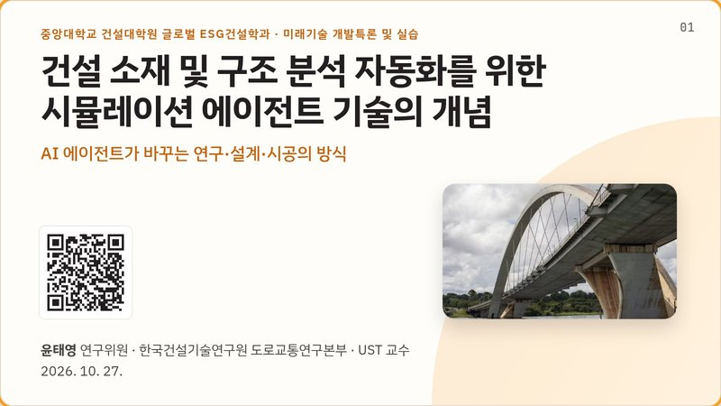
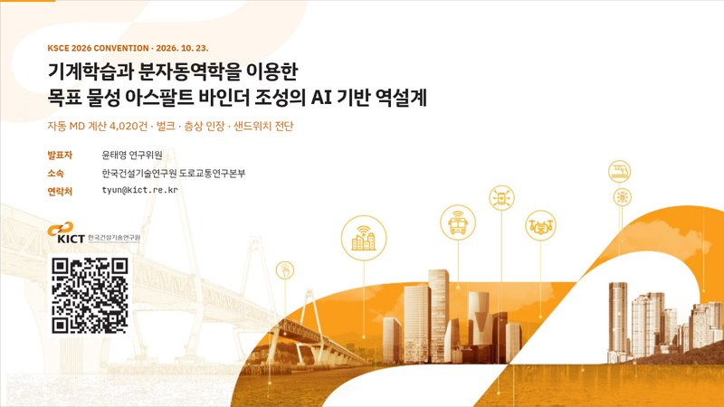
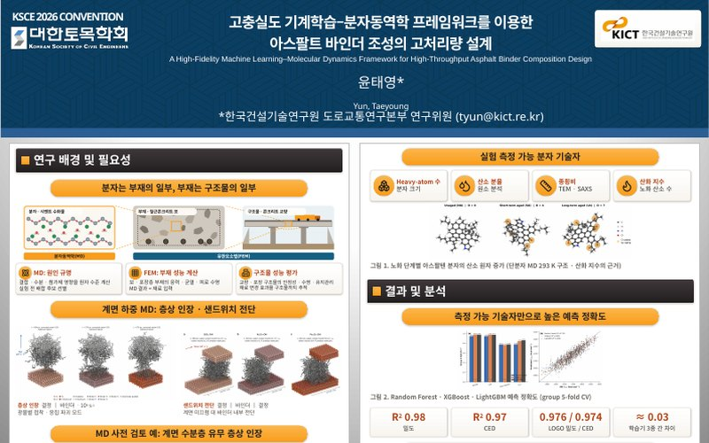
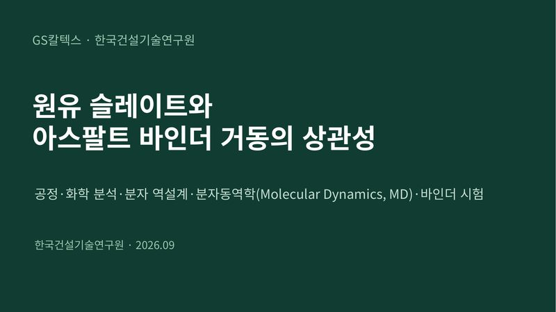
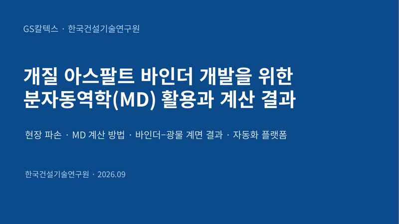
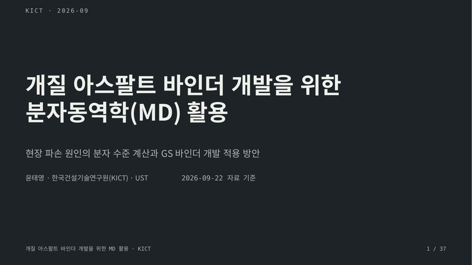
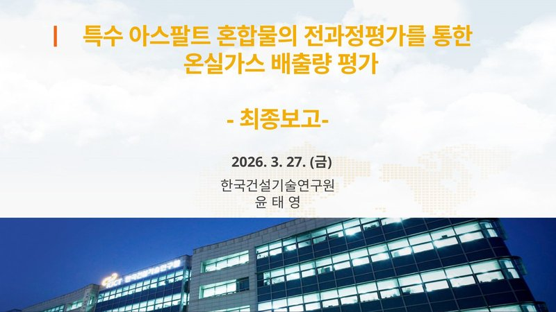
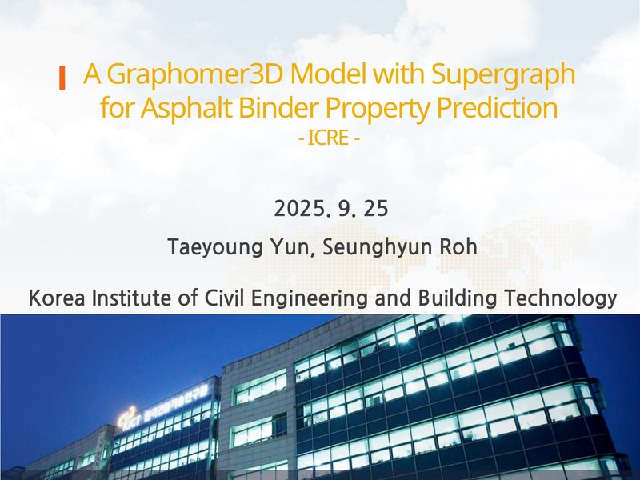

Taeyoung Yun 윤태영
윤태영 Taeyoung Yun
- Research Fellow, Korea Institute of Civil Engineering and Building Technology (KICT)
- Full Professor, University of Science and Technology (UST)
- 한국건설기술연구원 도로교통연구본부 연구위원
- 과학기술연합대학원대학교(UST) 교수
Presentations발표 자료

Special Topics in Future Technology Development for Kolon Construction
코오롱건설 대상 미래기술 개발 특론
Preview · download →미리보기 · 내려받기 →
AI-Driven Inverse Design of Asphalt Binder Compositions with Target Properties Using Machine Learning and Molecular Dynamics
기계학습과 분자동역학을 이용한 목표 물성 아스팔트 바인더 조성의 AI 기반 역설계
Preview · download →미리보기 · 내려받기 →
A High-Fidelity Machine Learning–Molecular Dynamics Framework for High-Throughput Asphalt Binder Composition Design
고충실도 기계학습–분자동역학 프레임워크를 이용한 아스팔트 바인더 조성의 고처리량 설계
Preview · download →미리보기 · 내려받기 →Core Technologies for a Physics-Informed AI Hybrid Physical–Virtual Self-Driving Laboratory for Construction Materials
물리정보융합 AI 기반 건설소재 실물·가상 하이브리드 자율실험실 핵심기술 개발
Preview · download →미리보기 · 내려받기 →
Correlating Crude Slate with Asphalt Binder Behavior
원유 슬레이트와 아스팔트 바인더 거동의 상관성
Preview · download →미리보기 · 내려받기 →
Using Molecular Dynamics (MD) to Develop Modified Asphalt Binders: Methods and Results
개질 아스팔트 바인더 개발을 위한 분자동역학(MD) 활용과 계산 결과
Preview · download →미리보기 · 내려받기 →
Using Molecular Dynamics (MD) to Develop Modified Asphalt Binders
개질 아스팔트 바인더 개발을 위한 분자동역학(MD) 활용
Preview · download →미리보기 · 내려받기 →Closed-Loop MD Automation Platform for Asphalt Binder Design
아스팔트 바인더를 컴퓨터가 먼저 설계하는 자동화 플랫폼
Preview · download →미리보기 · 내려받기 →
Greenhouse Gas Emission Assessment of Specialty Asphalt Mixtures through Life Cycle Assessment
특수 아스팔트 혼합물의 전과정평가를 통한 온실가스 배출량 평가
Preview · download →미리보기 · 내려받기 →
A Graphormer3D Model with Supergraph for Asphalt Binder Property Prediction
슈퍼그래프를 적용한 Graphormer3D 모델의 아스팔트 바인더 물성 예측
Preview · download →미리보기 · 내려받기 →Road Pavement Distress: Types, Causes, and Remedies
도로포장의 파손 종류, 원인, 대책
Preview · download →미리보기 · 내려받기 →Smart Construction in the Era of the Fourth Industrial Revolution
4차 산업혁명 시대의 스마트 건설
Road Pavement Construction and New Technologies
도로포장 시공 및 신기술
Course Materials정규 수업 자료
AI and Molecular Dynamics for Developing Inverse-Design Tools for Construction Materials
건설소재 역설계 도구 개발을 위한 AI와 분자동역학 활용
Covers the methods used for inverse design of construction materials: molecular dynamics principles and LAMMPS, simulations of asphalt and cement materials, machine-learning surrogate models, and autonomous exploration pipelines.
분자동역학의 원리와 LAMMPS 활용, 아스팔트 · 시멘트 소재 시뮬레이션, 기계학습 대리모델과 자율 탐색 파이프라인까지 건설소재 역설계에 쓰는 방법을 다룹니다.
COURSE · 21 WEEKS · 6 PARTS21주 강좌 · 6부 구성Viscoelastic Materials
점탄성 재료
Covers viscoelastic fundamentals, material functions, advanced theory such as time-temperature superposition, pavement applications, and physics-informed neural networks (PINN).
점탄성 기초와 재료 함수, 시간-온도 중첩 같은 심화 이론, 포장 응용, PINN(물리 정보 신경망) 기법을 다룹니다.
Pavement Design Methods
도로 포장 설계법
Structural design of asphalt and concrete pavements: traffic loading, subgrade support, and material properties, with empirical and mechanistic-empirical design methods.
아스팔트 · 콘크리트 포장의 구조 설계를 다룹니다. 교통 하중, 노상 지지력, 재료 물성을 바탕으로 경험적 설계법과 역학적-경험적 설계법을 배웁니다.
Road Maintenance
도로 유지관리
Pavement condition surveys and evaluation, distress types and their causes, repair and rehabilitation methods, and maintenance planning with a pavement management system (PMS).
포장 상태 조사와 평가, 파손 유형과 원인, 보수 · 보강 공법, 포장관리시스템(PMS)을 이용한 유지보수 계획을 다룹니다.
Mix Design of Asphalt Paving Materials
아스팔트 포장 재료의 배합설계
Properties of aggregates and asphalt binders, Marshall and Superpave mix design, volumetric properties such as air voids and VMA, and mixture performance tests.
골재와 아스팔트 바인더의 물성, 마샬 · 수퍼페이브 배합설계, 공극률 · VMA 같은 체적 특성과 혼합물 성능시험을 다룹니다.
Contact연락처
- tyun@kict.re.kr
- Affiliation
- Korea Institute of Civil Engineering and Building Technology (KICT)
- Address
- 283 Goyangdae-ro, Goyang-si 10223, Republic of Korea
- ORCID
- 0000-0003-1917-4126
- 이메일
- tyun@kict.re.kr
- 소속
- 한국건설기술연구원 도로교통연구본부
- 주소
- 10223 경기도 고양시 일산서구 고양대로 283
- ORCID
- 0000-0003-1917-4126